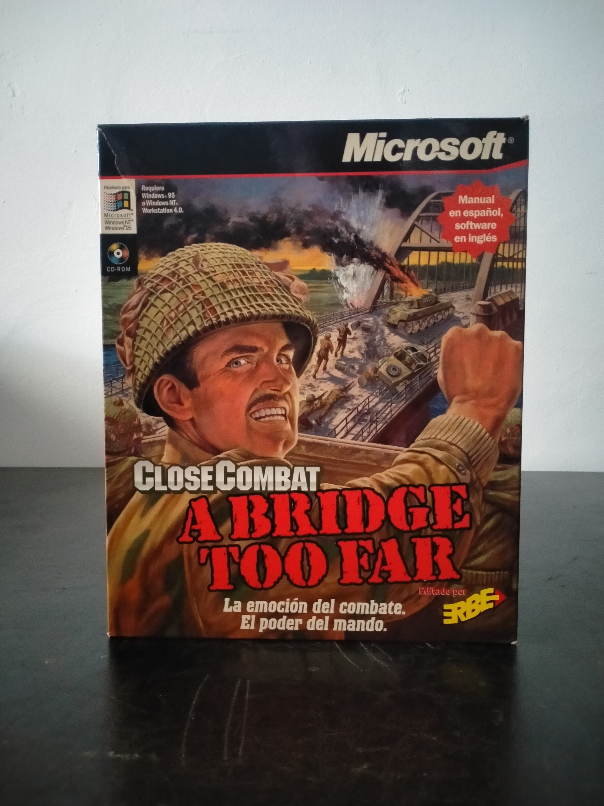

Ficha #000000
Close Combat: A Bridge Too Far
Close Combat: A Bridge Too Far es la segunda entrega de la serie Close Combat, desarrollada por Atomic Games y publicada por Microsoft en 1997. El juego recrea la Operación Market Garden de 1944, con especial atención a los combates alrededor de Arnhem y los puentes holandeses que dieron nombre al título. A diferencia de la estrategia en tiempo real convencional de los años noventa, no se centra en construcción de bases ni producción masiva de unidades, sino en mando táctico de infantería, blindados y apoyo de combate sobre escenarios históricos en tiempo real. Su sistema de moral, fatiga, supresión, experiencia, líneas de visión y comportamiento psicológico de las tropas fue uno de sus elementos más distintivos: las unidades podían entrar en pánico, rechazar órdenes o actuar de forma limitada bajo fuego enemigo. Esta edición española en caja grande, editada por ERBE y publicada bajo sello Microsoft, conserva especial interés documental por incluir manual en español con software en inglés, una combinación habitual en ciertas localizaciones parciales del mercado español de PC durante la segunda mitad de los noventa.
- Formato
- Big Box
- Plataforma
- Win95 WinNT
- Género
- Estrategia en tiempo real Táctica en tiempo real Wargame Simulación bélica Estrategia histórica
- Serie
- Todos Big Box
- Desarrollador
- Atomic Games
- Distribuidor
- Microsoft, ERBE Software
- EAN
- —
Contenido de la edición
- Caja Big Box
- CD-ROM en caja jewel case
- Manual en español
- Tarjeta de registro ERBE
Preservación
- Protección
- Verificación de CD
- Formato recomendado
- BIN/CUE
- Jugable en virtualización
- Sí
Preservación recomendada mediante imagen completa del CD-ROM original, preferiblemente BIN/CUE para documentar fielmente el soporte óptico. La ejecución en entorno virtual es viable con Windows 95 o Windows NT configurado, manteniendo la imagen montada si la edición realiza comprobación de disco durante instalación o ejecución.